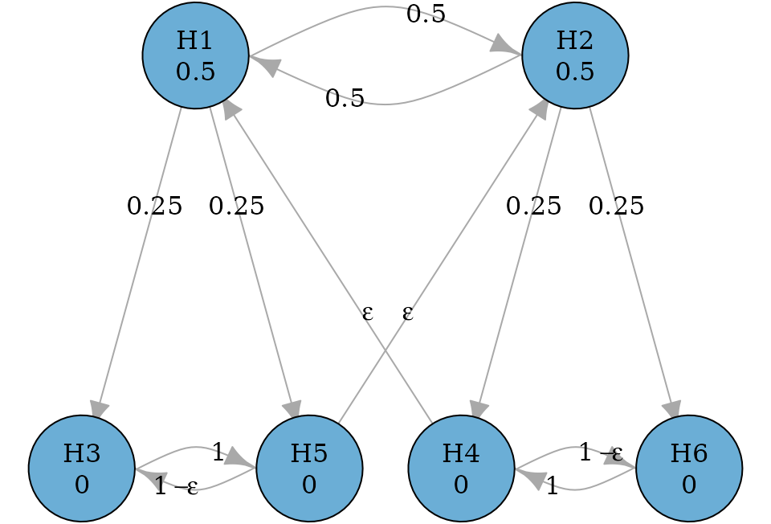

Graphical approaches based on the closure principle
Source:vignettes/closed-testing.Rmd
closed-testing.Rmd
library(gt)
library(gMCP)
library(lrstat)
library(graphicalMCP)
#>
#> Attaching package: 'graphicalMCP'
#> The following object is masked from 'package:gMCP':
#>
#> fallbackMultiple comparison problem
Consider a confirmatory clinical trial comparing a test treatment (treatment) against the control treatment (control) for a disease. There are two doses of treatment: the low dose and the high dose. There are three endpoints included in the multiplicity adjustment strategy, which are the primary endpoint (PE) and two secondary endpoints (SE1 and SE2). In total, there are six null hypotheses: \(H_1\), \(H_3\) and \(H_5\) are the primary hypothesis and two secondary hypotheses respectively for the low dose versus control; \(H_2\), \(H_4\) and \(H_6\) are the primary hypothesis and two secondary hypotheses respectively for the high dose versus control.
Before discussing appropriate multiple comparison procedures, there are clinical considerations, which add some structures to multiple comparison procedures, and which can be flexibly incorporated using graphical approaches. First, the low and the high doses are considered equally important, which means that rejecting the primary hypothesis for either dose versus control leads to a successful trial. Regarding secondary hypotheses, they are tested when their corresponding primary hypothesis has been rejected. This means that \(H_3\) and \(H_5\) are tested if \(H_1\) has been rejected; \(H_4\) and \(H_6\) are tested if \(H_2\) has been rejected.
In addition, there are some statistical considerations to complete the graph. The primary hypotheses \(H_1\) and \(H_2\) will have an equal hypothesis weight of 0.5. The secondary hypotheses have a hypothesis weight of 0. When a primary hypothesis has been rejected, it will have three outgoing edges: one to the other primary hypothesis and two to its descendant secondary hypotheses. The edge to the other primary hypothesis will have a transition weight of 0.5; two edges to the descendant secondary hypotheses will have an equal transition weight of 0.25. Between the secondary hypotheses for each dose-control comparison, we will have an edge of a transition weight of 1 (or very close to 1 to allow \(\epsilon\) edges). The hypothesis weights for a dose-control comparison group will be propagated to the primary hypothesis for the other dose-control comparison, but only after all hypotheses in the first dose-control comparison group have been deleted. With these specifications, we can create the following graph.
Create a graph
hypotheses <- c(0.5, 0.5, 0, 0, 0, 0)
epsilon <- 1e-5
transitions <- rbind(
c(0, 0.5, 0.25, 0, 0.25, 0),
c(0.5, 0, 0, 0.25, 0, 0.25),
c(0, 0, 0, 0, 1, 0),
c(epsilon, 0, 0, 0, 0, 1 - epsilon),
c(0, epsilon, 1 - epsilon, 0, 0, 0),
c(0, 0, 0, 1, 0, 0)
)
hyp_names <- c("H1", "H2", "H3", "H4", "H5", "H6")
g <- graph_create(hypotheses, transitions, hyp_names)
plot_layout <- rbind(
c(.15, .5),
c(.65, .5),
c( 0, 0),
c( .5, 0),
c( .3, 0),
c( .8, 0)
)
plot(g, layout = plot_layout, eps = epsilon, edge_curves = c(pairs = .5))
Perform the graphical multiple comparison procedure based on Bonferroni tests
Given a set of p-values for \(H_1, \ldots,
H_6\), the graphical multiple comparison procedure can be
performed to control the familywise error rate (FWER) at the
significance level alpha. For one-sided p-values,
alpha is often set to 0.025 (default). First, we perform a
Bonferroni-based procedure. After running the procedure, none of these
hypotheses is rejected. [names] showed in their [year] paper that the
shortcut graphical procedure is equivalent to the closed graphical
approach using Bonferroni tests only, so these results are identical to
using [graph_test_shortcut()].
p_values <- c(0.015, 0.013, 0.01, 0.007, 0.1, 0.0124)
test_results <- graph_test_closure(g, p = p_values, alpha = 0.025)
test_results$outputs$adjusted_p
#> H1 H2 H3 H4 H5 H6
#> 0.026 0.026 0.028 0.028 0.100 0.028
test_results$outputs$rejected
#> H1 H2 H3 H4 H5 H6
#> FALSE FALSE FALSE FALSE FALSE FALSE
# Same testing results as 'graph_test_shortcut(g, p = p_values, alpha = 0.025)'Obtain the closure
To investigate the closure and how every intersection hypothesis is
rejected, one could obtain the detailed output by specifying
verbose = T. Because all hypotheses are tested using
Bonferroni tests, the adjusted p-value for every intersection hypothesis
is the same as the adjusted p-value for group 1 (meaning all hypotheses
are in the same group for Bonferroni tests). An intersection hypothesis
is rejected if its adjusted p-value is less than or equal to
alpha.
Adjusted p-values are initially calculated by groups of hypotheses. In this case there is only one group, which includes all hypotheses, but there can be more. The adjusted p-value for an intersection hypothesis is the minimum across groups within that intersection. Finally, the adjusted p-value for an individual hypothesis for the whole procedure is equal to the max adjusted p-value across intersections containing that hypothesis.
test_results_verbose <-
graph_test_closure(g, p = p_values, alpha = 0.025, verbose = TRUE)
head(test_results_verbose$details) # Print fewer rows, e.g., 5
#> $results
#> H1 H2 H3 H4 H5 H6 adj_p_grp1
#> 1 0.5000000 0.5000000 0.0000000 0.0000000 0.0000000 0.0000000 0.02600000
#> 2 0.5000000 0.5000000 0.0000000 0.0000000 0.0000000 NA 0.02600000
#> 3 0.5000000 0.5000000 0.0000000 0.0000000 NA 0.0000000 0.02600000
#> 4 0.5000000 0.5000000 0.0000000 0.0000000 NA NA 0.02600000
#> 5 0.5000000 0.5000000 0.0000000 NA 0.0000000 0.0000000 0.02600000
#> 6 0.5000000 0.5000000 0.0000000 NA 0.0000000 NA 0.02600000
#> 7 0.5000000 0.5000000 0.0000000 NA NA 0.0000000 0.02600000
#> 8 0.5000000 0.5000000 0.0000000 NA NA NA 0.02600000
#> 9 0.5000000 0.5000000 NA 0.0000000 0.0000000 0.0000000 0.02600000
#> 10 0.5000000 0.5000000 NA 0.0000000 0.0000000 NA 0.02600000
#> 11 0.5000000 0.5000000 NA 0.0000000 NA 0.0000000 0.02600000
#> 12 0.5000000 0.5000000 NA 0.0000000 NA NA 0.02600000
#> 13 0.5000000 0.5000000 NA NA 0.0000000 0.0000000 0.02600000
#> 14 0.5000000 0.5000000 NA NA 0.0000000 NA 0.02600000
#> 15 0.5000000 0.5000000 NA NA NA 0.0000000 0.02600000
#> 16 0.5000000 0.5000000 NA NA NA NA 0.02600000
#> 17 0.7500000 NA 0.0000000 0.1250000 0.0000000 0.1250000 0.02000000
#> 18 0.7500000 NA 0.0000000 0.2500000 0.0000000 NA 0.02000000
#> 19 0.7500000 NA 0.0000000 0.1250000 NA 0.1250000 0.02000000
#> 20 0.7500000 NA 0.0000000 0.2500000 NA NA 0.02000000
#> 21 0.7500012 NA 0.0000000 NA 0.0000000 0.2499987 0.01999997
#> 22 1.0000000 NA 0.0000000 NA 0.0000000 NA 0.01500000
#> 23 0.7500012 NA 0.0000000 NA NA 0.2499987 0.01999997
#> 24 1.0000000 NA 0.0000000 NA NA NA 0.01500000
#> 25 0.7500000 NA NA 0.1250000 0.0000000 0.1250000 0.02000000
#> 26 0.7500000 NA NA 0.2500000 0.0000000 NA 0.02000000
#> 27 0.7500000 NA NA 0.1250000 NA 0.1250000 0.02000000
#> 28 0.7500000 NA NA 0.2500000 NA NA 0.02000000
#> 29 0.7500012 NA NA NA 0.0000000 0.2499987 0.01999997
#> 30 1.0000000 NA NA NA 0.0000000 NA 0.01500000
#> 31 0.7500012 NA NA NA NA 0.2499987 0.01999997
#> 32 1.0000000 NA NA NA NA NA 0.01500000
#> 33 NA 0.7500000 0.1250000 0.0000000 0.1250000 0.0000000 0.01733333
#> 34 NA 0.7500000 0.1250000 0.0000000 0.1250000 NA 0.01733333
#> 35 NA 0.7500012 0.2499987 0.0000000 NA 0.0000000 0.01733330
#> 36 NA 0.7500012 0.2499987 0.0000000 NA NA 0.01733330
#> 37 NA 0.7500000 0.1250000 NA 0.1250000 0.0000000 0.01733333
#> 38 NA 0.7500000 0.1250000 NA 0.1250000 NA 0.01733333
#> 39 NA 0.7500012 0.2499987 NA NA 0.0000000 0.01733330
#> 40 NA 0.7500012 0.2499987 NA NA NA 0.01733330
#> 41 NA 0.7500000 NA 0.0000000 0.2500000 0.0000000 0.01733333
#> 42 NA 0.7500000 NA 0.0000000 0.2500000 NA 0.01733333
#> 43 NA 1.0000000 NA 0.0000000 NA 0.0000000 0.01300000
#> 44 NA 1.0000000 NA 0.0000000 NA NA 0.01300000
#> 45 NA 0.7500000 NA NA 0.2500000 0.0000000 0.01733333
#> 46 NA 0.7500000 NA NA 0.2500000 NA 0.01733333
#> 47 NA 1.0000000 NA NA NA 0.0000000 0.01300000
#> 48 NA 1.0000000 NA NA NA NA 0.01300000
#> 49 NA NA 0.2500000 0.2500000 0.2500000 0.2500000 0.02800000
#> 50 NA NA 0.2500000 0.5000000 0.2500000 NA 0.01400000
#> 51 NA NA 0.4999983 0.2500008 NA 0.2500008 0.02000007
#> 52 NA NA 0.4999983 0.5000017 NA NA 0.01399995
#> 53 NA NA 0.2500008 NA 0.2500008 0.4999983 0.02480008
#> 54 NA NA 0.5000000 NA 0.5000000 NA 0.02000000
#> 55 NA NA 0.5000000 NA NA 0.5000000 0.02000000
#> 56 NA NA 1.0000000 NA NA NA 0.01000000
#> 57 NA NA NA 0.2500000 0.5000000 0.2500000 0.02800000
#> 58 NA NA NA 0.5000000 0.5000000 NA 0.01400000
#> 59 NA NA NA 0.5000000 NA 0.5000000 0.01400000
#> 60 NA NA NA 1.0000000 NA NA 0.00700000
#> 61 NA NA NA NA 0.5000017 0.4999983 0.02480008
#> 62 NA NA NA NA 1.0000000 NA 0.10000000
#> 63 NA NA NA NA NA 1.0000000 0.01240000
#> adj_p_inter reject_intersection
#> 1 0.02600000 0
#> 2 0.02600000 0
#> 3 0.02600000 0
#> 4 0.02600000 0
#> 5 0.02600000 0
#> 6 0.02600000 0
#> 7 0.02600000 0
#> 8 0.02600000 0
#> 9 0.02600000 0
#> 10 0.02600000 0
#> 11 0.02600000 0
#> 12 0.02600000 0
#> 13 0.02600000 0
#> 14 0.02600000 0
#> 15 0.02600000 0
#> 16 0.02600000 0
#> 17 0.02000000 1
#> 18 0.02000000 1
#> 19 0.02000000 1
#> 20 0.02000000 1
#> 21 0.01999997 1
#> 22 0.01500000 1
#> 23 0.01999997 1
#> 24 0.01500000 1
#> 25 0.02000000 1
#> 26 0.02000000 1
#> 27 0.02000000 1
#> 28 0.02000000 1
#> 29 0.01999997 1
#> 30 0.01500000 1
#> 31 0.01999997 1
#> 32 0.01500000 1
#> 33 0.01733333 1
#> 34 0.01733333 1
#> 35 0.01733330 1
#> 36 0.01733330 1
#> 37 0.01733333 1
#> 38 0.01733333 1
#> 39 0.01733330 1
#> 40 0.01733330 1
#> 41 0.01733333 1
#> 42 0.01733333 1
#> 43 0.01300000 1
#> 44 0.01300000 1
#> 45 0.01733333 1
#> 46 0.01733333 1
#> 47 0.01300000 1
#> 48 0.01300000 1
#> 49 0.02800000 0
#> 50 0.01400000 1
#> 51 0.02000007 1
#> 52 0.01399995 1
#> 53 0.02480008 1
#> 54 0.02000000 1
#> 55 0.02000000 1
#> 56 0.01000000 1
#> 57 0.02800000 0
#> 58 0.01400000 1
#> 59 0.01400000 1
#> 60 0.00700000 1
#> 61 0.02480008 1
#> 62 0.10000000 0
#> 63 0.01240000 1Obtain adjusted significance levels
An equivalent way to obtain rejections is via adjusting significance
levels. A hypothesis is rejected if its p-value is less than or equal to
its adjusted significance level. One can obtain adjusted significance
levels for every hypothesis in every intersection hypothesis in the
closure by specifying test_values = TRUE. A hypothesis is
rejected by the closed testing procedure if all intersection
hypotheses involving it have been rejected. An intersection hypothesis
is rejected if any null hypotheses within it have been
rejected.
test_results_test_values <- graph_test_closure(g, p = p_values, alpha = 0.025,
test_values = TRUE)
test_results_test_values$test_values$results
#> Intersection Hypothesis Test p <= Weight * Alpha
#> H1 1 H1 bonferroni 0.0150 <= 0.5000000 * 0.025
#> H2 1 H2 bonferroni 0.0130 <= 0.5000000 * 0.025
#> H3 1 H3 bonferroni 0.0100 <= 0.0000000 * 0.025
#> H4 1 H4 bonferroni 0.0070 <= 0.0000000 * 0.025
#> H5 1 H5 bonferroni 0.1000 <= 0.0000000 * 0.025
#> H6 1 H6 bonferroni 0.0124 <= 0.0000000 * 0.025
#> H11 2 H1 bonferroni 0.0150 <= 0.5000000 * 0.025
#> H21 2 H2 bonferroni 0.0130 <= 0.5000000 * 0.025
#> H31 2 H3 bonferroni 0.0100 <= 0.0000000 * 0.025
#> H41 2 H4 bonferroni 0.0070 <= 0.0000000 * 0.025
#> H51 2 H5 bonferroni 0.1000 <= 0.0000000 * 0.025
#> H12 3 H1 bonferroni 0.0150 <= 0.5000000 * 0.025
#> H22 3 H2 bonferroni 0.0130 <= 0.5000000 * 0.025
#> H32 3 H3 bonferroni 0.0100 <= 0.0000000 * 0.025
#> H42 3 H4 bonferroni 0.0070 <= 0.0000000 * 0.025
#> H61 3 H6 bonferroni 0.0124 <= 0.0000000 * 0.025
#> H13 4 H1 bonferroni 0.0150 <= 0.5000000 * 0.025
#> H23 4 H2 bonferroni 0.0130 <= 0.5000000 * 0.025
#> H33 4 H3 bonferroni 0.0100 <= 0.0000000 * 0.025
#> H43 4 H4 bonferroni 0.0070 <= 0.0000000 * 0.025
#> H14 5 H1 bonferroni 0.0150 <= 0.5000000 * 0.025
#> H24 5 H2 bonferroni 0.0130 <= 0.5000000 * 0.025
#> H34 5 H3 bonferroni 0.0100 <= 0.0000000 * 0.025
#> H52 5 H5 bonferroni 0.1000 <= 0.0000000 * 0.025
#> H62 5 H6 bonferroni 0.0124 <= 0.0000000 * 0.025
#> H15 6 H1 bonferroni 0.0150 <= 0.5000000 * 0.025
#> H25 6 H2 bonferroni 0.0130 <= 0.5000000 * 0.025
#> H35 6 H3 bonferroni 0.0100 <= 0.0000000 * 0.025
#> H53 6 H5 bonferroni 0.1000 <= 0.0000000 * 0.025
#> H16 7 H1 bonferroni 0.0150 <= 0.5000000 * 0.025
#> H26 7 H2 bonferroni 0.0130 <= 0.5000000 * 0.025
#> H36 7 H3 bonferroni 0.0100 <= 0.0000000 * 0.025
#> H63 7 H6 bonferroni 0.0124 <= 0.0000000 * 0.025
#> H17 8 H1 bonferroni 0.0150 <= 0.5000000 * 0.025
#> H27 8 H2 bonferroni 0.0130 <= 0.5000000 * 0.025
#> H37 8 H3 bonferroni 0.0100 <= 0.0000000 * 0.025
#> H18 9 H1 bonferroni 0.0150 <= 0.5000000 * 0.025
#> H28 9 H2 bonferroni 0.0130 <= 0.5000000 * 0.025
#> H44 9 H4 bonferroni 0.0070 <= 0.0000000 * 0.025
#> H54 9 H5 bonferroni 0.1000 <= 0.0000000 * 0.025
#> H64 9 H6 bonferroni 0.0124 <= 0.0000000 * 0.025
#> H19 10 H1 bonferroni 0.0150 <= 0.5000000 * 0.025
#> H29 10 H2 bonferroni 0.0130 <= 0.5000000 * 0.025
#> H45 10 H4 bonferroni 0.0070 <= 0.0000000 * 0.025
#> H55 10 H5 bonferroni 0.1000 <= 0.0000000 * 0.025
#> H110 11 H1 bonferroni 0.0150 <= 0.5000000 * 0.025
#> H210 11 H2 bonferroni 0.0130 <= 0.5000000 * 0.025
#> H46 11 H4 bonferroni 0.0070 <= 0.0000000 * 0.025
#> H65 11 H6 bonferroni 0.0124 <= 0.0000000 * 0.025
#> H111 12 H1 bonferroni 0.0150 <= 0.5000000 * 0.025
#> H211 12 H2 bonferroni 0.0130 <= 0.5000000 * 0.025
#> H47 12 H4 bonferroni 0.0070 <= 0.0000000 * 0.025
#> H112 13 H1 bonferroni 0.0150 <= 0.5000000 * 0.025
#> H212 13 H2 bonferroni 0.0130 <= 0.5000000 * 0.025
#> H56 13 H5 bonferroni 0.1000 <= 0.0000000 * 0.025
#> H66 13 H6 bonferroni 0.0124 <= 0.0000000 * 0.025
#> H113 14 H1 bonferroni 0.0150 <= 0.5000000 * 0.025
#> H213 14 H2 bonferroni 0.0130 <= 0.5000000 * 0.025
#> H57 14 H5 bonferroni 0.1000 <= 0.0000000 * 0.025
#> H114 15 H1 bonferroni 0.0150 <= 0.5000000 * 0.025
#> H214 15 H2 bonferroni 0.0130 <= 0.5000000 * 0.025
#> H67 15 H6 bonferroni 0.0124 <= 0.0000000 * 0.025
#> H115 16 H1 bonferroni 0.0150 <= 0.5000000 * 0.025
#> H215 16 H2 bonferroni 0.0130 <= 0.5000000 * 0.025
#> H116 17 H1 bonferroni 0.0150 <= 0.7500000 * 0.025
#> H38 17 H3 bonferroni 0.0100 <= 0.0000000 * 0.025
#> H48 17 H4 bonferroni 0.0070 <= 0.1250000 * 0.025
#> H58 17 H5 bonferroni 0.1000 <= 0.0000000 * 0.025
#> H68 17 H6 bonferroni 0.0124 <= 0.1250000 * 0.025
#> H117 18 H1 bonferroni 0.0150 <= 0.7500000 * 0.025
#> H39 18 H3 bonferroni 0.0100 <= 0.0000000 * 0.025
#> H49 18 H4 bonferroni 0.0070 <= 0.2500000 * 0.025
#> H59 18 H5 bonferroni 0.1000 <= 0.0000000 * 0.025
#> H118 19 H1 bonferroni 0.0150 <= 0.7500000 * 0.025
#> H310 19 H3 bonferroni 0.0100 <= 0.0000000 * 0.025
#> H410 19 H4 bonferroni 0.0070 <= 0.1250000 * 0.025
#> H69 19 H6 bonferroni 0.0124 <= 0.1250000 * 0.025
#> H119 20 H1 bonferroni 0.0150 <= 0.7500000 * 0.025
#> H311 20 H3 bonferroni 0.0100 <= 0.0000000 * 0.025
#> H411 20 H4 bonferroni 0.0070 <= 0.2500000 * 0.025
#> H120 21 H1 bonferroni 0.0150 <= 0.7500012 * 0.025
#> H312 21 H3 bonferroni 0.0100 <= 0.0000000 * 0.025
#> H510 21 H5 bonferroni 0.1000 <= 0.0000000 * 0.025
#> H610 21 H6 bonferroni 0.0124 <= 0.2499987 * 0.025
#> H121 22 H1 bonferroni 0.0150 <= 1.0000000 * 0.025
#> H313 22 H3 bonferroni 0.0100 <= 0.0000000 * 0.025
#> H511 22 H5 bonferroni 0.1000 <= 0.0000000 * 0.025
#> H122 23 H1 bonferroni 0.0150 <= 0.7500012 * 0.025
#> H314 23 H3 bonferroni 0.0100 <= 0.0000000 * 0.025
#> H611 23 H6 bonferroni 0.0124 <= 0.2499987 * 0.025
#> H123 24 H1 bonferroni 0.0150 <= 1.0000000 * 0.025
#> H315 24 H3 bonferroni 0.0100 <= 0.0000000 * 0.025
#> H124 25 H1 bonferroni 0.0150 <= 0.7500000 * 0.025
#> H412 25 H4 bonferroni 0.0070 <= 0.1250000 * 0.025
#> H512 25 H5 bonferroni 0.1000 <= 0.0000000 * 0.025
#> H612 25 H6 bonferroni 0.0124 <= 0.1250000 * 0.025
#> H125 26 H1 bonferroni 0.0150 <= 0.7500000 * 0.025
#> H413 26 H4 bonferroni 0.0070 <= 0.2500000 * 0.025
#> H513 26 H5 bonferroni 0.1000 <= 0.0000000 * 0.025
#> H126 27 H1 bonferroni 0.0150 <= 0.7500000 * 0.025
#> H414 27 H4 bonferroni 0.0070 <= 0.1250000 * 0.025
#> H613 27 H6 bonferroni 0.0124 <= 0.1250000 * 0.025
#> H127 28 H1 bonferroni 0.0150 <= 0.7500000 * 0.025
#> H415 28 H4 bonferroni 0.0070 <= 0.2500000 * 0.025
#> H128 29 H1 bonferroni 0.0150 <= 0.7500012 * 0.025
#> H514 29 H5 bonferroni 0.1000 <= 0.0000000 * 0.025
#> H614 29 H6 bonferroni 0.0124 <= 0.2499987 * 0.025
#> H129 30 H1 bonferroni 0.0150 <= 1.0000000 * 0.025
#> H515 30 H5 bonferroni 0.1000 <= 0.0000000 * 0.025
#> H130 31 H1 bonferroni 0.0150 <= 0.7500012 * 0.025
#> H615 31 H6 bonferroni 0.0124 <= 0.2499987 * 0.025
#> H131 32 H1 bonferroni 0.0150 <= 1.0000000 * 0.025
#> H216 33 H2 bonferroni 0.0130 <= 0.7500000 * 0.025
#> H316 33 H3 bonferroni 0.0100 <= 0.1250000 * 0.025
#> H416 33 H4 bonferroni 0.0070 <= 0.0000000 * 0.025
#> H516 33 H5 bonferroni 0.1000 <= 0.1250000 * 0.025
#> H616 33 H6 bonferroni 0.0124 <= 0.0000000 * 0.025
#> H217 34 H2 bonferroni 0.0130 <= 0.7500000 * 0.025
#> H317 34 H3 bonferroni 0.0100 <= 0.1250000 * 0.025
#> H417 34 H4 bonferroni 0.0070 <= 0.0000000 * 0.025
#> H517 34 H5 bonferroni 0.1000 <= 0.1250000 * 0.025
#> H218 35 H2 bonferroni 0.0130 <= 0.7500012 * 0.025
#> H318 35 H3 bonferroni 0.0100 <= 0.2499987 * 0.025
#> H418 35 H4 bonferroni 0.0070 <= 0.0000000 * 0.025
#> H617 35 H6 bonferroni 0.0124 <= 0.0000000 * 0.025
#> H219 36 H2 bonferroni 0.0130 <= 0.7500012 * 0.025
#> H319 36 H3 bonferroni 0.0100 <= 0.2499987 * 0.025
#> H419 36 H4 bonferroni 0.0070 <= 0.0000000 * 0.025
#> H220 37 H2 bonferroni 0.0130 <= 0.7500000 * 0.025
#> H320 37 H3 bonferroni 0.0100 <= 0.1250000 * 0.025
#> H518 37 H5 bonferroni 0.1000 <= 0.1250000 * 0.025
#> H618 37 H6 bonferroni 0.0124 <= 0.0000000 * 0.025
#> H221 38 H2 bonferroni 0.0130 <= 0.7500000 * 0.025
#> H321 38 H3 bonferroni 0.0100 <= 0.1250000 * 0.025
#> H519 38 H5 bonferroni 0.1000 <= 0.1250000 * 0.025
#> H222 39 H2 bonferroni 0.0130 <= 0.7500012 * 0.025
#> H322 39 H3 bonferroni 0.0100 <= 0.2499987 * 0.025
#> H619 39 H6 bonferroni 0.0124 <= 0.0000000 * 0.025
#> H223 40 H2 bonferroni 0.0130 <= 0.7500012 * 0.025
#> H323 40 H3 bonferroni 0.0100 <= 0.2499987 * 0.025
#> H224 41 H2 bonferroni 0.0130 <= 0.7500000 * 0.025
#> H420 41 H4 bonferroni 0.0070 <= 0.0000000 * 0.025
#> H520 41 H5 bonferroni 0.1000 <= 0.2500000 * 0.025
#> H620 41 H6 bonferroni 0.0124 <= 0.0000000 * 0.025
#> H225 42 H2 bonferroni 0.0130 <= 0.7500000 * 0.025
#> H421 42 H4 bonferroni 0.0070 <= 0.0000000 * 0.025
#> H521 42 H5 bonferroni 0.1000 <= 0.2500000 * 0.025
#> H226 43 H2 bonferroni 0.0130 <= 1.0000000 * 0.025
#> H422 43 H4 bonferroni 0.0070 <= 0.0000000 * 0.025
#> H621 43 H6 bonferroni 0.0124 <= 0.0000000 * 0.025
#> H227 44 H2 bonferroni 0.0130 <= 1.0000000 * 0.025
#> H423 44 H4 bonferroni 0.0070 <= 0.0000000 * 0.025
#> H228 45 H2 bonferroni 0.0130 <= 0.7500000 * 0.025
#> H522 45 H5 bonferroni 0.1000 <= 0.2500000 * 0.025
#> H622 45 H6 bonferroni 0.0124 <= 0.0000000 * 0.025
#> H229 46 H2 bonferroni 0.0130 <= 0.7500000 * 0.025
#> H523 46 H5 bonferroni 0.1000 <= 0.2500000 * 0.025
#> H230 47 H2 bonferroni 0.0130 <= 1.0000000 * 0.025
#> H623 47 H6 bonferroni 0.0124 <= 0.0000000 * 0.025
#> H231 48 H2 bonferroni 0.0130 <= 1.0000000 * 0.025
#> H324 49 H3 bonferroni 0.0100 <= 0.2500000 * 0.025
#> H424 49 H4 bonferroni 0.0070 <= 0.2500000 * 0.025
#> H524 49 H5 bonferroni 0.1000 <= 0.2500000 * 0.025
#> H624 49 H6 bonferroni 0.0124 <= 0.2500000 * 0.025
#> H325 50 H3 bonferroni 0.0100 <= 0.2500000 * 0.025
#> H425 50 H4 bonferroni 0.0070 <= 0.5000000 * 0.025
#> H525 50 H5 bonferroni 0.1000 <= 0.2500000 * 0.025
#> H326 51 H3 bonferroni 0.0100 <= 0.4999983 * 0.025
#> H426 51 H4 bonferroni 0.0070 <= 0.2500008 * 0.025
#> H625 51 H6 bonferroni 0.0124 <= 0.2500008 * 0.025
#> H327 52 H3 bonferroni 0.0100 <= 0.4999983 * 0.025
#> H427 52 H4 bonferroni 0.0070 <= 0.5000017 * 0.025
#> H328 53 H3 bonferroni 0.0100 <= 0.2500008 * 0.025
#> H526 53 H5 bonferroni 0.1000 <= 0.2500008 * 0.025
#> H626 53 H6 bonferroni 0.0124 <= 0.4999983 * 0.025
#> H329 54 H3 bonferroni 0.0100 <= 0.5000000 * 0.025
#> H527 54 H5 bonferroni 0.1000 <= 0.5000000 * 0.025
#> H330 55 H3 bonferroni 0.0100 <= 0.5000000 * 0.025
#> H627 55 H6 bonferroni 0.0124 <= 0.5000000 * 0.025
#> H331 56 H3 bonferroni 0.0100 <= 1.0000000 * 0.025
#> H428 57 H4 bonferroni 0.0070 <= 0.2500000 * 0.025
#> H528 57 H5 bonferroni 0.1000 <= 0.5000000 * 0.025
#> H628 57 H6 bonferroni 0.0124 <= 0.2500000 * 0.025
#> H429 58 H4 bonferroni 0.0070 <= 0.5000000 * 0.025
#> H529 58 H5 bonferroni 0.1000 <= 0.5000000 * 0.025
#> H430 59 H4 bonferroni 0.0070 <= 0.5000000 * 0.025
#> H629 59 H6 bonferroni 0.0124 <= 0.5000000 * 0.025
#> H431 60 H4 bonferroni 0.0070 <= 1.0000000 * 0.025
#> H530 61 H5 bonferroni 0.1000 <= 0.5000017 * 0.025
#> H630 61 H6 bonferroni 0.0124 <= 0.4999983 * 0.025
#> H531 62 H5 bonferroni 0.1000 <= 1.0000000 * 0.025
#> H631 63 H6 bonferroni 0.0124 <= 1.0000000 * 0.025
#> Inequality_holds
#> H1 FALSE
#> H2 FALSE
#> H3 FALSE
#> H4 FALSE
#> H5 FALSE
#> H6 FALSE
#> H11 FALSE
#> H21 FALSE
#> H31 FALSE
#> H41 FALSE
#> H51 FALSE
#> H12 FALSE
#> H22 FALSE
#> H32 FALSE
#> H42 FALSE
#> H61 FALSE
#> H13 FALSE
#> H23 FALSE
#> H33 FALSE
#> H43 FALSE
#> H14 FALSE
#> H24 FALSE
#> H34 FALSE
#> H52 FALSE
#> H62 FALSE
#> H15 FALSE
#> H25 FALSE
#> H35 FALSE
#> H53 FALSE
#> H16 FALSE
#> H26 FALSE
#> H36 FALSE
#> H63 FALSE
#> H17 FALSE
#> H27 FALSE
#> H37 FALSE
#> H18 FALSE
#> H28 FALSE
#> H44 FALSE
#> H54 FALSE
#> H64 FALSE
#> H19 FALSE
#> H29 FALSE
#> H45 FALSE
#> H55 FALSE
#> H110 FALSE
#> H210 FALSE
#> H46 FALSE
#> H65 FALSE
#> H111 FALSE
#> H211 FALSE
#> H47 FALSE
#> H112 FALSE
#> H212 FALSE
#> H56 FALSE
#> H66 FALSE
#> H113 FALSE
#> H213 FALSE
#> H57 FALSE
#> H114 FALSE
#> H214 FALSE
#> H67 FALSE
#> H115 FALSE
#> H215 FALSE
#> H116 TRUE
#> H38 FALSE
#> H48 FALSE
#> H58 FALSE
#> H68 FALSE
#> H117 TRUE
#> H39 FALSE
#> H49 FALSE
#> H59 FALSE
#> H118 TRUE
#> H310 FALSE
#> H410 FALSE
#> H69 FALSE
#> H119 TRUE
#> H311 FALSE
#> H411 FALSE
#> H120 TRUE
#> H312 FALSE
#> H510 FALSE
#> H610 FALSE
#> H121 TRUE
#> H313 FALSE
#> H511 FALSE
#> H122 TRUE
#> H314 FALSE
#> H611 FALSE
#> H123 TRUE
#> H315 FALSE
#> H124 TRUE
#> H412 FALSE
#> H512 FALSE
#> H612 FALSE
#> H125 TRUE
#> H413 FALSE
#> H513 FALSE
#> H126 TRUE
#> H414 FALSE
#> H613 FALSE
#> H127 TRUE
#> H415 FALSE
#> H128 TRUE
#> H514 FALSE
#> H614 FALSE
#> H129 TRUE
#> H515 FALSE
#> H130 TRUE
#> H615 FALSE
#> H131 TRUE
#> H216 TRUE
#> H316 FALSE
#> H416 FALSE
#> H516 FALSE
#> H616 FALSE
#> H217 TRUE
#> H317 FALSE
#> H417 FALSE
#> H517 FALSE
#> H218 TRUE
#> H318 FALSE
#> H418 FALSE
#> H617 FALSE
#> H219 TRUE
#> H319 FALSE
#> H419 FALSE
#> H220 TRUE
#> H320 FALSE
#> H518 FALSE
#> H618 FALSE
#> H221 TRUE
#> H321 FALSE
#> H519 FALSE
#> H222 TRUE
#> H322 FALSE
#> H619 FALSE
#> H223 TRUE
#> H323 FALSE
#> H224 TRUE
#> H420 FALSE
#> H520 FALSE
#> H620 FALSE
#> H225 TRUE
#> H421 FALSE
#> H521 FALSE
#> H226 TRUE
#> H422 FALSE
#> H621 FALSE
#> H227 TRUE
#> H423 FALSE
#> H228 TRUE
#> H522 FALSE
#> H622 FALSE
#> H229 TRUE
#> H523 FALSE
#> H230 TRUE
#> H623 FALSE
#> H231 TRUE
#> H324 FALSE
#> H424 FALSE
#> H524 FALSE
#> H624 FALSE
#> H325 FALSE
#> H425 TRUE
#> H525 FALSE
#> H326 TRUE
#> H426 FALSE
#> H625 FALSE
#> H327 TRUE
#> H427 TRUE
#> H328 FALSE
#> H526 FALSE
#> H626 TRUE
#> H329 TRUE
#> H527 FALSE
#> H330 TRUE
#> H627 TRUE
#> H331 TRUE
#> H428 FALSE
#> H528 FALSE
#> H628 FALSE
#> H429 TRUE
#> H529 FALSE
#> H430 TRUE
#> H629 TRUE
#> H431 TRUE
#> H530 FALSE
#> H630 TRUE
#> H531 FALSE
#> H631 TRUEMixed procedures for graphical approaches
The framework of graphicalMCP allows a mixture of tests to improve the performance from the Bonferroni-based graphical approaches. One can group hypotheses into multiple subgroups and perform a separate test for every subgroup. Currently, graphicalMCP supports Bonferroni, parametric and Simes tests. To connect results from subgroups, Bonferroni tests are used. Here, we will show two examples. The first example applies parametric tests to primary hypotheses, and the second example applies Simes tests to two subgroups of secondary hypotheses in addition to parametric tests to primary hypotheses.
Parametric tests for primary hypotheses
In this example, we assume that the test statistics for primary hypotheses follow an asymptotic bivariate normal distribution. Under their null hypotheses \(H_1\) and \(H_2\), the mean of the distribution is 0. The correlation between test statistics for \(H_1\) and \(H_2\) can be calculated as a function of sample size. Assume that the sample size for the control, the low and the high doses is \(n_0\), \(n_1\) and \(n_2\), respectively. Then the correlation between test statistics for \(H_1\) and \(H_2\) is \(\rho_{12}=\left(\frac{n_1}{n_1+n_0}\right)^{1/2}\left(\frac{n_2}{n_2+n_0}\right)^{1/2}\). Under the equal randomization, this correlation is 0.5.
For the intersection hypothesis \(H_1\cap
H_2\cap H_3\cap H_4\cap H_5\cap H_6\), hypothesis weights are
0.5, 0.5, 0, 0, 0, and 0, respectively for \(H_1,\ldots, H_6\). Assume one-sided
p-values for these hypotheses are \(p_1,\ldots,p_6\), respectively. The
intersection hypothesis is rejected by the Bonferroni test if \(p_1\leq 0.5\alpha\) or \(p_2\leq 0.5\alpha\). Alternatively, a
parametric test utilizes the correlation between test statistics \(t_1=\Phi^{-1}(1 - p_1)\) and \(t_2=\Phi^{-1}(1 - p_2)\). The intersection
hypothesis can be rejected if \(p_1\leq
c\times 0.5\alpha\) or \(p_2\leq
c\times 0.5\alpha\), where the \(c\) value is the adjustment due to the
correlation between \(t_1\) and \(t_2\). More specifically, \(c\) can be solved as a solution to \(Pr\{(p_1\leq c\times 0.5\alpha)\cup (p_2\leq
c\times 0.5\alpha)\}=\alpha\). For a given correlation \(\rho_{12}\), the \(c\) value can be solved using the
uniroot function and the mvtnorm package. For
example, if \(\rho_{12}=0.5\), the
\(c\) value is 1.078. Then we can
obtain the adjusted significance level for \(H_1\) and \(H_2\) as \(c\times 0.5\alpha\). Alternatively, we can
calculate the adjusted p-value for \(H_1\cap
H_2\cap H_3\cap H_4\cap H_5\cap H_6\) as \(Pr\{(P_1\leq \min{\{p_1, p_2\}})\cup (P_2\leq
\min{\{p_1, p_2\}})\}\).
To implement this procedure, we need to create two subgroups: one for
\(H_1\) and \(H_2\), and one for the rest of the
hypotheses. For the first subgroup of hypotheses, we apply parametric
tests; for the second subgroup, we apply Bonferroni tests. Three
additional inputs are needed to specify the grouping information with
test_groups, to identify the types of tests for every
subgroup with test_types, and to provide the correlation
matrix for parametric tests with test_corr. Assuming a
correlation of 0.5 between test statistics for primary hypotheses, \(H_1\) and \(H_2\) are rejected, but no others are
rejected using the Bonferroni-based graphical approach. This illustrates
the power improvement of using parametric tests over Bonferroni
tests.
corr_12 <- matrix(0.5, nrow = 2, ncol = 2)
diag(corr_12) <- 1
test_results_parametric <- graph_test_closure(g, p = p_values, alpha = 0.025,
test_groups = list(c(1,2), 3:6),
test_types = c("parametric", "bonferroni"),
test_corr = list(corr_12, NA),
test_values = TRUE)
test_results_parametric$outputs$adjusted_p
#> H1 H2 H3 H4 H5 H6
#> 0.02413846 0.02413846 0.02800000 0.02800000 0.10000000 0.02800000
test_results_parametric$outputs$rejected
#> H1 H2 H3 H4 H5 H6
#> TRUE TRUE FALSE FALSE FALSE FALSE
test_results_parametric$test_values$results[test_results_parametric$test_values$results$Intersection == 1, ]
#> Intersection Hypothesis Test p <= c_value * Weight * Alpha
#> H1 1 H1 parametric 0.0150 <= 1.0782936582 * 0.5 * 0.025
#> H2 1 H2 parametric 0.0130 <= 1.0782936582 * 0.5 * 0.025
#> H3 1 H3 bonferroni 0.0100 <= 0.0 * 0.025
#> H4 1 H4 bonferroni 0.0070 <= 0.0 * 0.025
#> H5 1 H5 bonferroni 0.1000 <= 0.0 * 0.025
#> H6 1 H6 bonferroni 0.0124 <= 0.0 * 0.025
#> Inequality_holds
#> H1 FALSE
#> H2 TRUE
#> H3 FALSE
#> H4 FALSE
#> H5 FALSE
#> H6 FALSEParametric tests for primary hypotheses and Simes tests for secondary hypotheses
In addition to using parametric tests for primary hypotheses, there are other ways to improve the Bonferroni-based graphical approaches. One way is to apply Simes tests to secondary hypotheses. Simes tests improve over Bonferroni tests because they may reject an intersection hypothesis if all p-values are relatively small, even if they’re larger than adjusted significance levels of Bonferroni tests.
For the intersection hypothesis \(H_1\cap H_2\cap H_3\cap H_4\cap H_5\cap H_6\), hypothesis weights are 0.5, 0.5, 0, 0, 0, and 0, respectively for \(H_1,\ldots, H_6\). The intersection hypothesis is rejected by the Bonferroni test if \(p_1\leq 0.5\alpha\) or \(p_2\leq 0.5\alpha\). In addition to these conditions, the Simes test can also reject the intersection hypothesis if both \(p_1\) and \(p_2\) are less than or equal to \(\alpha\). In order to control the Type I error for the Simes test, a distributional requirement is needed, which is called \(MTP_2\). In this case, it means that the correlation between test statistics for \(H_1\) and \(H_2\) should be non-negative.
To illustrate the possibility of using mixed tests in this example, we keep parametric tests for primary hypotheses and apply Simes tests for secondary hypotheses. There are two sets of secondary hypotheses: \(H_3\) and \(H_5\) for the secondary hypotheses for the low dose versus control, and \(H_4\) and \(H_6\) for the secondary hypotheses for the high dose versus control. It is believed that the correlation between test statistics for \(H_3\) and \(H_5\) is non-negative and it is a similar case for \(H_4\) and \(H_6\). Thus one can apply Simes tests to \(H_3\) and \(H_5\), and separately to \(H_4\) and \(H_6\). Note that this is different from applying Simes tests to all \(H_3\ldots,H_6\) which requires a stronger \(MTP^2\) condition.
To implement this procedure, we create three subgroups: one for \(H_1\) and \(H_2\), one for \(H_3\) and \(H_5\), and one for \(H_4\) and \(H_6\). For the first subgroup of hypotheses, we apply the parametric tests; for the second and the third subgroups, we apply separate Simes tests. Assuming a correlation of 0.5 between test statistics for primary hypotheses, \(H_1\), \(H_2\), \(H_4\), \(H_6\), and \(H_3\) are rejected. Compared to the results of using the Bonferroni tests for secondary hypotheses, \(H_3\), \(H_4\) and \(H_6\) are the additional hypotheses rejected because of using Simes tests, showing the power improvement of using Simes tests.
test_results_parametric_simes <-
graph_test_closure(g, p = p_values, alpha = 0.025,
test_groups = list(c(1,2), c(3, 5), c(4, 6)),
test_types = c("parametric", "simes", "simes"),
test_corr = list(corr_12, NA, NA))
test_results_parametric_simes$outputs$adjusted_p
#> H1 H2 H3 H4 H5 H6
#> 0.02413846 0.02413846 0.02480008 0.02480000 0.10000000 0.02480008
test_results_parametric_simes$outputs$rejected
#> H1 H2 H3 H4 H5 H6
#> TRUE TRUE TRUE TRUE FALSE TRUEPower calculation
Given the above graph, the trial team is often interested in the
power of the trial. For a single null hypothesis, the power is the
probability to reject the null hypothesis at the significance level
alpha when the alternative hypothesis is true (i.e. a true
positive). For multiple null hypotheses, there could be multiple version
of power. For example, the power to reject at least one hypothesis and
the power to reject all hypotheses, given the alternative hypotheses are
true. With the graphical multiple comparison procedures, it is also
important to understand the power to reject each hypothesis, given the
multiplicity adjustment. Sometimes, a team may want to customize
definitions of power to define success. Thus power calculation is an
important aspect of trial design.
Input: Marginal power for primary hypotheses
Assume that the primary endpoint is about the occurrence of an
unfavorable clinical event. To evaluate the treatment effect, the
proportion of patients with this event is calculated and it is the lower
the better. Assume that the proportions are 0.181 for the low and the
high doses, and 0.3 for control. Using the equal randomization among the
three treatment groups, the clinical trial team chooses a total sample
size of 600 with 200 per group. This leads to a marginal power of 80%
for \(H_1\) and \(H_2\), respectively, using the two-sample
test for difference in proportions with unpooled variance each at
one-sided significance level 0.025. In this calculation, we use the
marginal power to combine the information from the treatment effect, any
nuisance parameter, and sample sizes for each hypothesis. Note that the
significance level used for the marginal power should be the same as
alpha which is used in the power calculation as the
significance level for the FWER control. In addition, the marginal power
has a one-to-one relationship with the noncentrality parameter, which is
illustrated below.
alpha <- 0.025
prop <- c(0.3, 0.181, 0.181)
sample_size <- rep(200, 3)
unpooled_variance <- prop[-1] * (1 - prop[-1]) / sample_size[-1] +
prop[1] * (1 - prop[1]) / sample_size[1]
noncentrality_parameter_primary <- -(prop[-1] - prop[1]) / sqrt(unpooled_variance)
marginal_power_primary <- pnorm(qnorm(alpha, lower.tail = FALSE),
noncentrality_parameter_primary, 1, lower.tail = FALSE)
names(marginal_power_primary) <- c("H1", "H2")
marginal_power_primary
#> H1 H2
#> 0.8028315 0.8028315Input: Marginal power for secondary hypotheses
Assume that the secondary endpoint (SE1) is about the change in total medication score from baseline, which is a continuous outcome. Also assume that the secondary endpoint (SE2) is about the change in another medication score from baseline, which is a continuous outcome and it contains fewer categories compared to SE1. To evaluate the treatment effect, the mean change is calculated and it is the more reduction the better. Assume that the mean change from baseline for SE1 is the reduction of 7.5 and 8.25, respectively for the low and the high doses, and 5 for control. Also assume that the mean change from baseline for SE2 is the reduction of 8 and 9, respectively for the low and the high doses, and 6 for control. Further assume a known common standard deviation of 10. Given the sample size of 200 per treatment group, the marginal power is 71% and 90% for \(H_3\) and \(H_4\), respectively and 52% and 85% for \(H_5\) and \(H_6\), respectively using the two-sample \(z\)-test for the difference in means each at the one-sided significance level 0.025.
mean_change_se1 <- c(5, 7.5, 8.25)
sd <- rep(10, 3)
variance <- sd[-1]^2 / sample_size[-1] + sd[1]^2 / sample_size[1]
noncentrality_parameter_se1 <- (mean_change_se1[-1] - mean_change_se1[1]) /
sqrt(variance)
marginal_power_se1 <- pnorm(qnorm(alpha, lower.tail = FALSE),
noncentrality_parameter_se1, 1, lower.tail = FALSE)
names(marginal_power_se1) <- c("H3", "H4")
marginal_power_se1
#> H3 H4
#> 0.7054139 0.9014809
mean_change_se2 <- c(6, 8, 9)
noncentrality_parameter_se2 <- (mean_change_se2[-1] - mean_change_se2[1]) /
sqrt(variance)
marginal_power_se2 <- pnorm(qnorm(alpha, lower.tail = FALSE),
noncentrality_parameter_se2, 1, lower.tail = FALSE)
names(marginal_power_se2) <- c("H5", "H6")
marginal_power_se2
#> H5 H6
#> 0.5159678 0.8508384Input: Correlation structure to simulate test statistics
In addition to the marginal power, we also need to make assumptions about the joint distribution of test statistics. In this example, we assume that they follow a multivariate normal distribution which means they’re defined by the noncentrality parameters above and the correlation matrix \(R\). To obtain the correlations, it is helpful to understand that there are two types of correlations in this example. The correlation between two dose-control comparisons for the same endpoint and the correlation between endpoints. The former correlation can be calculated as a function of sample size. For example, the correlation between test statistics for \(H_1\) and \(H_2\) is \(\rho_{12}=\left(\frac{n_1}{n_1+n_0}\right)^{1/2}\left(\frac{n_2}{n_3+n_0}\right)^{1/2}\). Under the equal randomization, this correlation is 0.5. The correlation between test statistics for \(H_3\) and \(H_4\) and for \(H_5\) and \(H_6\) is the same as the above. On the other hand, the correlation between endpoints for the same dose-control comparison is often estimated based on prior knowledge or from previous trials. Without the information, we assume it to be \(\rho_{13}=\rho_{15}=\rho_{24}=\rho_{26}=\rho_{35}=\rho_{46}=0.5\). In practice, one could set this correlation as a parameter and try multiple values to assess the sensitivity of this assumption. Regarding the correlation between test statistics for \(H_1\) and \(H_4 (H_6)\) and for \(H_2\) and \(H_3 (H_5)\), they are even more difficult to estimate. Here we use a simple product rule, which means that this correlation is a product of correlations of the two previously assumed correlations. For example, \(\rho_{14}=\rho_{12}*\rho_{24}\) and \(\rho_{23}=\rho_{12}*\rho_{13}\). In practice, further assumptions may be made and tested, instead of using the product rule.
corr <- matrix(0, nrow = 6, ncol = 6)
corr[1, 2] <- corr[3, 4] <- corr[5, 6] <- sqrt(sample_size[2] / sum(sample_size[1:2]) *
sample_size[3] / sum(sample_size[c(1, 3)]))
rho <- 0.5
corr[1, 3] <- corr[1, 5] <- corr[2, 4] <- corr[2, 6] <- corr[3, 5] <- corr[4, 6] <- rho
corr[1, 4] <- corr[1, 6] <- corr[2, 3] <- corr[2, 5] <- corr[1, 2] * rho
corr[3, 6] <- corr[1, 3] * corr[1, 6]
corr[4, 5] <- corr[1, 4] * corr[1, 6]
corr <- corr + t(corr)
diag(corr) <- 1
colnames(corr) <- hyp_names
rownames(corr) <- hyp_names
corr
#> H1 H2 H3 H4 H5 H6
#> H1 1.00 0.50 0.500 0.2500 0.5000 0.250
#> H2 0.50 1.00 0.250 0.5000 0.2500 0.500
#> H3 0.50 0.25 1.000 0.5000 0.5000 0.125
#> H4 0.25 0.50 0.500 1.0000 0.0625 0.500
#> H5 0.50 0.25 0.500 0.0625 1.0000 0.500
#> H6 0.25 0.50 0.125 0.5000 0.5000 1.000User-defined success criteria
As mentioned earlier, there are multiple versions of “power†when
there are multiple hypotheses. Commonly used “power” definitions
include: - Local power: The probability of each hypothesis being
rejected (with multiplicity adjustment) - Expected no. of rejections:
The expected number of rejections - Power to reject 1 or more: The
probability to reject at least one hypothesis - Power to reject all: The
probability to reject all hypotheses These are the default outputs from
the graph_calculate_power function. In addition, an user
could customize success criteria to define other versions of
“power”.
# Probability to reject H1
H1 <- function(x) x[1]
# Expected number of rejections
`Expected no. of rejections` <- function(x) x[1] + x[2] + x[3] + x[4]
# Probability to reject at least one hypothesis
`AtLeast1` <- function(x) x[1] | x[2] | x[3] | x[4] | x[5] | x[6]
# Probability to reject all hypotheses
`All` <- function(x) x[1] & x[2] & x[3] & x[4] & x[5] & x[6]
# Probability to reject both H1 and H2
`H1andH2` <- function(x) x[1] & x[2]
# Probability to reject all hypotheses for the low dose or the high dose
`(H1andH3andH5)or(H2andH4andH6)` <- function(x) (x[1] & x[3] & x[5]) | (x[2] & x[4] & x[6])
succ <- list(H1, `Expected no. of rejections`, `AtLeast1`, `All`, `H1andH2`,
`(H1andH3andH5)or(H2andH4andH6)`)Output: Calculate power
Given the above inputs, we can calculate power via simulation for the
graphical multiple comparison procedure at one-sided significance level
alpha=0.025 using sim_n = 1e5 simulations and
the seed sim_seed = 1234. There are three procedures to
compare: the Bonferroni-based procedure, the procedure using parametric
tests for primary hypotheses, and the procedure using parametric tests
for primary hypotheses and Simes tests for two sets of secondary
hypotheses separately. The local power for hypotheses \(H_1, \ldots, H_6\) is - 0.760, 0.752,
0.510, 0.665, 0.391, and 0.625, respectively using the Bonferroni-based
procedure, - 0.764, 0.756, 0.511, 0.668, 0.392, and 0.628, respectively
using the procedure using parametric tests for primary hypotheses, -
0.764, 0.757, 0.521, 0.673, 0.402, and 0.633, respectively using the
procedure using parametric tests for primary hypotheses and Simes tests
for two sets of secondary hypotheses separately. Note that the local
power is improved for all hypotheses after parametric tests and Simes
tests being applied over the Bonferroni-based procedure.
power_bonferroni <- graph_calculate_power(
g,
alpha = 0.025,
sim_corr = corr,
sim_n = 1e5,
power_marginal = c(
marginal_power_primary,
marginal_power_se1,
marginal_power_se2
),
sim_success = succ,
sim_seed = 1234
)
round(power_bonferroni$power$power_local, 3)
#> H1 H2 H3 H4 H5 H6
#> 0.760 0.752 0.510 0.665 0.391 0.625
power_parametric <- graph_calculate_power(
g,
alpha = 0.025,
sim_corr = corr,
sim_n = 1e5,
power_marginal = c(
marginal_power_primary,
marginal_power_se1,
marginal_power_se2
),
test_groups = list(c(1, 2), 3:6),
test_types = c("parametric", "bonferroni"),
test_corr = list(corr_12, NA),
sim_success = succ,
sim_seed = 1234
)
round(power_parametric$power$power_local, 3)
#> H1 H2 H3 H4 H5 H6
#> 0.764 0.756 0.511 0.668 0.392 0.628
power_parametric_simes <- graph_calculate_power(
g,
alpha = 0.025,
sim_corr = corr,
sim_n = 1e5,
power_marginal = c(
marginal_power_primary,
marginal_power_se1,
marginal_power_se2
),
test_groups = list(c(1, 2), c(3, 5), c(4, 6)),
test_types = c("parametric", "simes", "simes"),
test_corr = list(corr_12, NA, NA),
sim_success = succ,
sim_seed = 1234
)
round(power_parametric_simes$power$power_local, 3)
#> H1 H2 H3 H4 H5 H6
#> 0.764 0.757 0.521 0.673 0.402 0.633To see the detailed outputs of all simulated p-values and rejection
decisions for all hypotheses, we can specify
verbose = TRUE. This will produce a lot of outputs. To
allow flexible printing functions, a user can change the following: -
The indented space with the default setting of indent = 2 -
The precision of numeric values (i.e., the number of decimal places)
with the default setting of precision = 6
verbose_output_parametric_simes <- graph_calculate_power(
g,
alpha = 0.025,
sim_corr = corr,
sim_n = 1e5,
power_marginal = c(
marginal_power_primary,
marginal_power_se1,
marginal_power_se2
),
test_groups = list(c(1, 2), c(3, 5), c(4, 6)),
test_types = c("parametric", "simes", "simes"),
test_corr = list(corr_12, NA, NA),
sim_success = succ,
sim_seed = 1234,
verbose = TRUE
)
print(verbose_output_parametric_simes)
#>
#> Test parameters ($inputs) ------------------------------------------------------
#> Initial graph
#>
#> --- Hypothesis weights ---
#> H1: 0.5
#> H2: 0.5
#> H3: 0.0
#> H4: 0.0
#> H5: 0.0
#> H6: 0.0
#>
#> --- Transition weights ---
#> H1 H2 H3 H4 H5 H6
#> H1 0.00000 0.50000 0.25000 0.00000 0.25000 0.00000
#> H2 0.50000 0.00000 0.00000 0.25000 0.00000 0.25000
#> H3 0.00000 0.00000 0.00000 0.00000 1.00000 0.00000
#> H4 0.00001 0.00000 0.00000 0.00000 0.00000 0.99999
#> H5 0.00000 0.00001 0.99999 0.00000 0.00000 0.00000
#> H6 0.00000 0.00000 0.00000 1.00000 0.00000 0.00000
#>
#> Alpha = 0.025
#>
#> Parametric testing correlation: H1 H2
#> H1 1.0 0.5
#> H2 0.5 1.0
#>
#> Test types
#> parametric: (H1, H2)
#> simes: (H3, H5)
#> simes: (H4, H6)
#>
#> Simulation parameters ($inputs) ------------------------------------------------
#> Testing 100,000 simulations - random seed 1234 & multivariate normal params:
#>
#> H1 H2 H3 H4 H5 H6
#> Marginal power: 0.8028 0.8028 0.7054 0.9015 0.5160 0.8508
#>
#> Correlation: H1 H2 H3 H4 H5 H6
#> H1 1.0000 0.5000 0.5000 0.2500 0.5000 0.2500
#> H2 0.5000 1.0000 0.2500 0.5000 0.2500 0.5000
#> H3 0.5000 0.2500 1.0000 0.5000 0.5000 0.1250
#> H4 0.2500 0.5000 0.5000 1.0000 0.0625 0.5000
#> H5 0.5000 0.2500 0.5000 0.0625 1.0000 0.5000
#> H6 0.2500 0.5000 0.1250 0.5000 0.5000 1.0000
#>
#> Power calculation ($power) -----------------------------------------------------
#> H1 H2 H3 H4 H5 H6
#> Local power: 0.7644 0.7566 0.5209 0.6730 0.4023 0.6329
#>
#> Expected no. of rejections: 3.75
#> Power to reject 1 or more: 0.8628
#> Power to reject all: 0.3254
#>
#> Success measure Power
#> x[1] 0.7644
#> x[1] + x[2] + x[3] + x[4] 2.7148
#> x[1] | x[2] | x[3] | x[4] | x[5] | x[6] 0.8628
#> x[1] & x[2] & x[3] & x[4] & x[5] & x[6] 0.3254
#> x[1] & x[2] 0.6582
#> (x[1] & x[3] & x[5]) | (x[2] & x[4] & x[6]) 0.6332
#>
#> Simulation details ($details) --------------------------------------------------
#> p_sim_H1 p_sim_H2 p_sim_H3 p_sim_H4 p_sim_H5 p_sim_H6 rej_H1 rej_H2
#> 2.365e-02 6.962e-03 3.835e-03 6.156e-02 3.403e-03 1.842e-03 FALSE TRUE
#> 3.670e-02 4.681e-02 6.858e-02 2.848e-02 1.496e-01 5.521e-02 FALSE FALSE
#> 1.575e-02 6.544e-03 1.153e-03 7.655e-04 8.362e-02 2.553e-02 TRUE TRUE
#> 5.337e-03 8.700e-07 9.953e-03 2.429e-04 3.699e-02 1.346e-04 TRUE TRUE
#> 3.427e-02 1.789e-01 6.203e-03 3.059e-02 4.616e-02 6.661e-02 FALSE FALSE
#> 1.114e-03 1.784e-02 6.084e-02 8.707e-03 3.865e-01 8.674e-02 TRUE TRUE
#> 2.541e-01 2.101e-01 2.617e-02 2.774e-02 9.249e-03 2.977e-02 FALSE FALSE
#> 9.081e-02 4.433e-02 1.904e-01 4.188e-02 3.997e-01 1.097e-01 FALSE FALSE
#> 7.396e-02 4.728e-02 3.779e-01 2.962e-02 4.447e-01 6.206e-02 FALSE FALSE
#> 3.354e-04 1.049e-03 1.247e-05 3.230e-03 1.601e-04 1.146e-02 TRUE TRUE
#> rej_H3 rej_H4 rej_H5 rej_H6
#> FALSE FALSE FALSE TRUE
#> FALSE FALSE FALSE FALSE
#> TRUE TRUE FALSE FALSE
#> TRUE TRUE FALSE TRUE
#> FALSE FALSE FALSE FALSE
#> FALSE FALSE FALSE FALSE
#> FALSE FALSE FALSE FALSE
#> FALSE FALSE FALSE FALSE
#> FALSE FALSE FALSE FALSE
#> TRUE TRUE TRUE TRUE
#> ... (Use `print(x, rows = <nn>)` for more)
print(verbose_output_parametric_simes,
indent = 4,
precision = 6)
#>
#> Test parameters ($inputs) ------------------------------------------------------
#> Initial graph
#>
#> --- Hypothesis weights ---
#> H1: 0.5
#> H2: 0.5
#> H3: 0.0
#> H4: 0.0
#> H5: 0.0
#> H6: 0.0
#>
#> --- Transition weights ---
#> H1 H2 H3 H4 H5 H6
#> H1 0.00000 0.50000 0.25000 0.00000 0.25000 0.00000
#> H2 0.50000 0.00000 0.00000 0.25000 0.00000 0.25000
#> H3 0.00000 0.00000 0.00000 0.00000 1.00000 0.00000
#> H4 0.00001 0.00000 0.00000 0.00000 0.00000 0.99999
#> H5 0.00000 0.00001 0.99999 0.00000 0.00000 0.00000
#> H6 0.00000 0.00000 0.00000 1.00000 0.00000 0.00000
#>
#> Alpha = 0.025
#>
#> Parametric testing correlation: H1 H2
#> H1 1.0 0.5
#> H2 0.5 1.0
#>
#> Test types
#> parametric: (H1, H2)
#> simes: (H3, H5)
#> simes: (H4, H6)
#>
#> Simulation parameters ($inputs) ------------------------------------------------
#> Testing 100,000 simulations - random seed 1234 & multivariate normal params:
#>
#> H1 H2 H3 H4 H5 H6
#> Marginal power: 0.802831 0.802831 0.705414 0.901481 0.515968 0.850838
#>
#> Correlation: H1 H2 H3 H4 H5 H6
#> H1 1.0000 0.5000 0.5000 0.2500 0.5000 0.2500
#> H2 0.5000 1.0000 0.2500 0.5000 0.2500 0.5000
#> H3 0.5000 0.2500 1.0000 0.5000 0.5000 0.1250
#> H4 0.2500 0.5000 0.5000 1.0000 0.0625 0.5000
#> H5 0.5000 0.2500 0.5000 0.0625 1.0000 0.5000
#> H6 0.2500 0.5000 0.1250 0.5000 0.5000 1.0000
#>
#> Power calculation ($power) -----------------------------------------------------
#> H1 H2 H3 H4 H5 H6
#> Local power: 0.76437 0.75656 0.52086 0.67302 0.40234 0.63292
#>
#> Expected no. of rejections: 3.75007
#> Power to reject 1 or more: 0.86277
#> Power to reject all: 0.32537
#>
#> Success measure Power
#> x[1] 0.76437
#> x[1] + x[2] + x[3] + x[4] 2.71481
#> x[1] | x[2] | x[3] | x[4] | x[5] | x[6] 0.86277
#> x[1] & x[2] & x[3] & x[4] & x[5] & x[6] 0.32537
#> x[1] & x[2] 0.65816
#> (x[1] & x[3] & x[5]) | (x[2] & x[4] & x[6]) 0.63324
#>
#> Simulation details ($details) --------------------------------------------------
#> p_sim_H1 p_sim_H2 p_sim_H3 p_sim_H4 p_sim_H5 p_sim_H6 rej_H1
#> 2.36514e-02 6.96244e-03 3.83510e-03 6.15622e-02 3.40342e-03 1.84173e-03 FALSE
#> 3.67030e-02 4.68113e-02 6.85785e-02 2.84812e-02 1.49604e-01 5.52142e-02 FALSE
#> 1.57542e-02 6.54383e-03 1.15274e-03 7.65505e-04 8.36187e-02 2.55280e-02 TRUE
#> 5.33699e-03 8.69996e-07 9.95272e-03 2.42937e-04 3.69938e-02 1.34554e-04 TRUE
#> 3.42665e-02 1.78879e-01 6.20296e-03 3.05856e-02 4.61643e-02 6.66051e-02 FALSE
#> 1.11399e-03 1.78370e-02 6.08385e-02 8.70657e-03 3.86501e-01 8.67387e-02 TRUE
#> 2.54077e-01 2.10119e-01 2.61667e-02 2.77426e-02 9.24897e-03 2.97659e-02 FALSE
#> 9.08136e-02 4.43323e-02 1.90372e-01 4.18783e-02 3.99651e-01 1.09703e-01 FALSE
#> 7.39568e-02 4.72837e-02 3.77864e-01 2.96172e-02 4.44676e-01 6.20565e-02 FALSE
#> 3.35392e-04 1.04874e-03 1.24653e-05 3.22990e-03 1.60129e-04 1.14582e-02 TRUE
#> rej_H2 rej_H3 rej_H4 rej_H5 rej_H6
#> TRUE FALSE FALSE FALSE TRUE
#> FALSE FALSE FALSE FALSE FALSE
#> TRUE TRUE TRUE FALSE FALSE
#> TRUE TRUE TRUE FALSE TRUE
#> FALSE FALSE FALSE FALSE FALSE
#> TRUE FALSE FALSE FALSE FALSE
#> FALSE FALSE FALSE FALSE FALSE
#> FALSE FALSE FALSE FALSE FALSE
#> FALSE FALSE FALSE FALSE FALSE
#> TRUE TRUE TRUE TRUE TRUE
#> ... (Use `print(x, rows = <nn>)` for more)